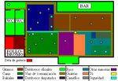

De: La Frikipedia, la enciclopedia extremadamente seria.
De: La Frikipedia, la enciclopedia extremadamente seria. De: La Frikipedia, la enciclopedia extremadamente seria.
| De la serie Países del planeta tierra: | |||||
| Puebla | |||||
|---|---|---|---|---|---|
| |||||
| Lema: "Osea, Vamos al Antro Wey" | |||||
| Himno: Quiero ir al Antro
| |||||
| 
| |||||
| Capital | Puebla | ||||
| Mayor ciudad | Puebla | ||||
| Lenguas oficiales | La Puta Madre que no se les entiende nada al Hablar | ||||
| Gobierno | Gay | ||||
| Monarquía | Pipope (el de Rosa es el líder, ya que indica que la quiere por atrás) | ||||
| Área | Cholocientos mil kilometros cuadrados en forma de cotorro | ||||
| Población | Poquita (no se pueden reproducir debido a sus prácticas homosexuales) | ||||
| Moneda | del Monopoly | ||||
| Zona horaria | la que pierdes en tanat borrachera | ||||
| Dominio Internet | puro porno | ||||
| Código telefónico | 6* 6* 6
| ||||
| Es bien sabido que su lider le gusta por atrás. | |||||
«¿Como es que esos subnormales se dan el lujo de gastar tanto dinero en el antro y en un coche y vivir en una pocilga?»
~ Un Regio critica a los Pipopes por malgastar.
«Por eso no creo en Diox, si Diox existiera, no cometería este tipo de errores»
~ El Anticristo Acerca de los Pipopes.
«Mi Dioj pero la RePutisima Madre que me parió como noj dejah a la'o de ejtoj pendeheteh!!!!»
~ Jarocho Rayandosela a los Pipopes.
«Mi Dios, soy Poblano, Guapo de Herencia Española, el país debe alabarme »
~ Mentada de Poblano Probando que SI es un maldito gilipollas.
«Haber idiota, en todo el país hablamos español, además estas mas prieto que Michael Jackson, y si Hitler los hubiera conocido a ustedes se hubiera divertido más matandolos que a los judíos »
~ Un Norteño Bajando al Poblano de las nubes.
«Tito Tito Capotito, que reloj tan más bonito a de ser de marca cara por es tus amigas dicen, que a ti nunca se te para, ¡BOMBA! »
~ Yucateco BaDedicandole una Bomba los Poblanos.
Puebla es un estado de México, su ciudad es conocida por su bajo nivel de Desarrollo Humano, pero eso sí, la gente va a Presumir a los Antros, a los Centros Comerciales, pueden traer el carrazo del año aunque no tengan ni donde vivir.
Por lo generallos Pipopes suelen confundir a la gente alegando que PIPOPE significa Pieza Poblana Perfecta. Sin embargo, el significado original y válido, es Pinche Poblano Pendejo. Nada más hay que recordar el papepipopu para saber cual es la buena (Para Pendejos Pinches Poblanos Putos).
Aún no nos explicamos como es que esos tipos pueden crer que son Europeos cuando en realidad estan más feos y prietos que cualquier otra cosa, hasta los hombres se oxigenan el cabello y se ven pero de la pu... ¡Que hasta al Niño Diox hacen llorar estos desdichados Pipopes!. Son odiados por los Chilangos, Jarochos, Tlaxcaltecas, Regios, Tapatíos, Queretanos, Durangueños, de hecho, son odiados por todo el país por su alto grado de ignorancia, ya que el unico uso que se les da a los libros en Puebla es para meterselos por el Recto.
El Poblano es mocho por naturalez, es altamente religiosos y conservador, cuando no estan en el Antro o en el centro comercial, seguro han de andar en la Iglesia diciendo "Todos vamos a morir, malgastemos nuestro dinero a lo sonzo (esto ultimo molesta a los Regios), no nos apeguemos a lo material (wow y uds pueden tener un carrazo y vivir en una caja, mi Diox) o cosas por el estilo. También suele ser muy cerado (lo contraro a sus vecinos Jarochos ¡ARRIBA VERACRUZ!), cosa rara ya que cuando se trata de estar en el antro se acurrucan abrazan y no se suelta, da asco pero ¿quien chingados entiende a un poblano?
Puebla viene de Poblano que viene de Pipope, palabra con un orgien Nahuatl que dice Pietzel Poblacoetl Pentejepec que significa Pinche Poblano Pendejo.
- El Pipope tradicional maneja lento pero al ver que lo vas a rebasar acelera y se cierra con tal que no lo hagas, es cuestión de honor.
-Debe tener mínimo un jeta o un bora, preferentemente rojo, para presumir a sus enemigos aunque se mueran de hambre o no tengan casa propia.
-Visten de pans los domingos.
-desayunan memelas y chalupas o tortas de tamal (nadie come tamal en torta) después de ir en familia a misa de 8.
-Al llegar a un restaurante se sientan el la única mesa sucia, aunque todas las limpias estén desocupadas.
-Los "hombres" de familia traen unos lentes oscuros encima de la cabeza.
-Hablan con un acento que se asemeja a cuando tienes una papa caliente en la boca.
-Al hablar alargan la "A", "e", u "o", al final de la palabra. Ej. Enceriooo, holaaa etc.
-Siempre siguen a los otros; donde todos comen, ellos comen aunque la comida sea mala, donde todos se forman, ellos se forman aunque la otra fila este vacía etc.
-Los pipopes juveniles son lo peor, aman la música electrónica y más a las basuras como skrillex, Visten camisas de color rosa mostrando parte de su lampiño pecho y pantalones extremadamente entubados, zapatos puntiagudos y no usan calcetines.
-Compran ropa en el mercado pero dicen que es marca original.
-Están dispuestos a pagar mucho dinero por una pulcera que tenga el logotipo de una marca reconocida de ropa.
Tienen al equipo de furbo, el PiPoPes FC llamados los "Camoteros de Puebla" (El camote es lo que los poblanos se meten por atras por lo general) que es un equipo apunto de oficializarse gay, si lo logran el próximo año ya sería el segundo equipo oficialmente gay detrás de los Pumas.
El equipo de Furbo Americano son los Aztecas UDLAP, el equipo de Goofy por lo que no me voy a burlar de ellos.
Su equipo de Beisbol "los Pericos de Puebla son conocidos por ser el único equipo de México (y probablemente del mundo) con problemas económicos, ya que se acabaron sus bates metiendoselos por atras.
Tuvieron un equipode Baloncesto (los Angeles de Puebla) pero desaparecieron debido a que al contagiarse del espíritu gay de Puebla se salieron del equipo para contraer matrimonio (entre ellos mismos) y terminaron haciendo una megaorgía de negros.
Autor(es):